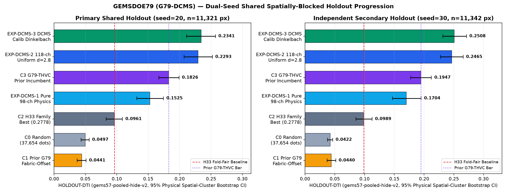
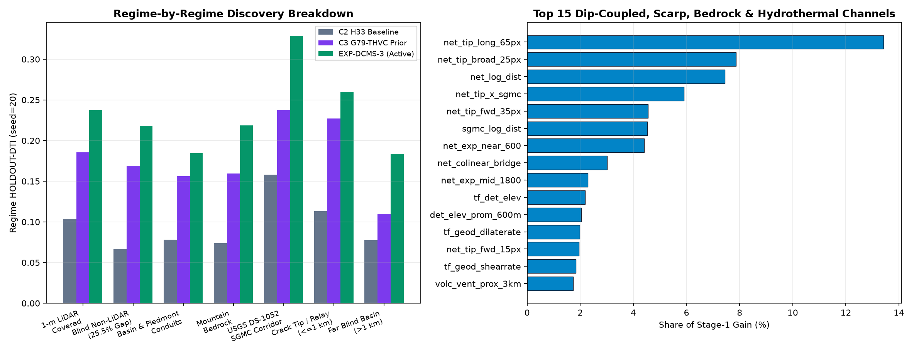
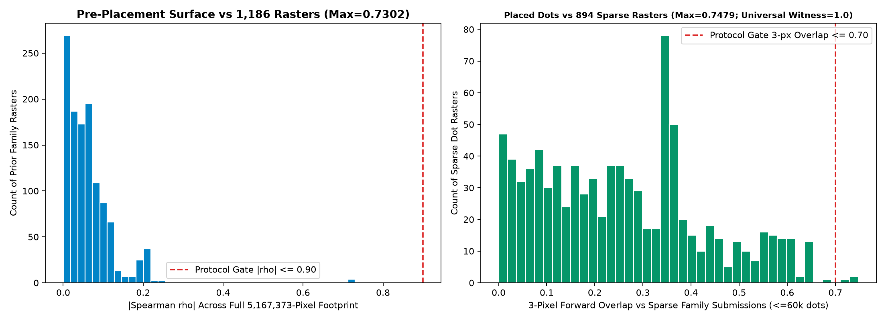
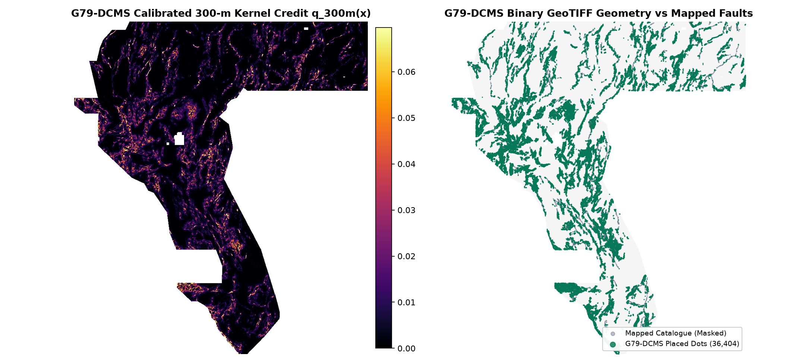

01 — BYTE LINEAGE
44,090 → 37,654
H33 is exactly D2.8 minus 6,436 pixels within two pixels of the catalogue. None of the deleted pixels sits exactly on a catalogue pixel.
Independent remeasurement ↗GEMSDOE79 / CANONICAL G79-DCMS RESEARCH ARTIFACT
NEGATIVE · DO NOT SUBMITA newly generated 36,404-pixel G79-DCMS fault-discovery GeoTIFF (`HOLDOUT-DTI` 0.2341 / 0.2508, +0.0515 / +0.0562 above prior G79-THVC). Format, leakage canaries and ≤45k sparse sibling overlaps pass, but literal 3-px novelty fails (1.0000 / 0.7479 > 0.70), so upload is blocked.
1 band · float32 · EPSG:32611 · 100 m · 3730 × 3292 · finite binary 0/1 · unchanged research artifact
Read the decision & submission prerequisites ↗ · See the holdout evidence ↗

01 / CLEAR PERMISSION BOUNDARIES
Automated local verification binds the card to the exact bytes. Scientific gates, organizer acceptance and weekly slot capacity are separate checks.
Newly generated G79-DCMS name, ≤140-character note and SHA-256 bound for reproducibility, not an instruction to upload. Manual upload is blocked under the literal overlap gate.
No manual inspector is needed to reach this rejection. Integrity PASS does not mean scientific approval.
FROZEN RECEIPTS / SHARED EVALUATOR
All seven arms are scored together in one unmodified gems57-pooled-hide-v2 run per seed.
| Experiment / control arm | Seed 20 · n = 11,321 | Seed 30 · n = 11,342 |
|---|---|---|
| EXP-DCMS-3 · Dip-coupled calibrated Dinkelbach | 0.2341 [0.2110, 0.2571] | 0.2508 [0.2314, 0.2713] |
| EXP-DCMS-2 · 118-channel uniform spacing (d = 2.8) | 0.2293 [0.2072, 0.2521] | 0.2465 [0.2275, 0.2657] |
| C3 · Prior G79-THVC incumbent control | 0.1826 [0.1670, 0.1990] | 0.1947 [0.1775, 0.2124] |
| EXP-DCMS-1 · 98-channel pure physics (0 fault cues) | 0.1525 [0.1318, 0.1743] | 0.1704 [0.1472, 0.1952] |
| C2 · H33 fold-fair control | 0.0961 [0.0831, 0.1090] | 0.0989 [0.0854, 0.1128] |
| C1 · Historical E1 fabric-offset control | 0.0441 [0.0370, 0.0512] | 0.0440 [0.0371, 0.0517] |
| C0 · Random-footprint 37,654-dot control | 0.0497 [0.0433, 0.0561] | 0.0422 [0.0378, 0.0465] |
| Matched comparison | Candidate − control |
|---|---|
| Seed 20 · G79-DCMS − G79-THVC incumbent | 0.0515 [0.0341, 0.0710] |
| Seed 30 · G79-DCMS − G79-THVC incumbent | 0.0562 [0.0407, 0.0731] |
| Seed 20 · G79-DCMS − H33 control | 0.1380 [0.1187, 0.1572] |
| Seed 30 · G79-DCMS − H33 control | 0.1519 [0.1339, 0.1736] |
Four buffered whole-component folds; visible catalogue masked pixel-exactly. Pooled weighted TP/FP/FN; α = 0.2, β = 0.8, 300 m triangular kernel. Seeds reuse the same region and catalogue, so their counts are not added as independent observations. Intervals are conditional on fitted folds, labels and settings, not all model-selection uncertainty or hidden-test shift.
Full machine receipts live in dcms_results.json and evidence_summary.json; superseded G79-THVC receipts remain archived at run_card_thvc.json and g79_thvc_results.json.
DIAGNOSTIC FIGURES / RECEIPT-DERIVED
Rendered directly from frozen evaluator outputs, live posteriors and the 1,201-blob registry scan.




02 / WHAT H33 ACTUALLY TEACHES
H33's reported 0.2778 remains an unverified historical report; G79-DCMS combines collar discipline with 10-m 3DEP scarps, USGS DS-1052 bedrock reactivation and DOE GDR hydrothermal cues.
H33 is exactly D2.8 minus 6,436 pixels within two pixels of the catalogue. None of the deleted pixels sits exactly on a catalogue pixel.
Independent remeasurement ↗Redundant predictions add false-positive cost without increasing truth coverage; median-scale Dinkelbach submodular allocation stops naturally at 36,404 pixels.
The conditional metric algebra ↗H79-DCMS raised HOLDOUT-DTI from 0.1826 / 0.1947 (G79-THVC) to 0.2341 / 0.2508 while leaving four distinct follow-up hypotheses documented.
Ranked hypotheses & results ↗WHY SUBMISSION IS STILL BLOCKED
G79-DCMS emits a newly generated 36,404-dot GeoTIFF whose bytes match zero prior family artifacts, clears pre/post Spearman limits (0.7302 and 0.1163 ≤ 0.90), and clears every ≤45,000-dot sparse sibling across all 92 repositories (max 0.6535, lowering GEMSDOE83 from 0.7139 to 0.6502).
Partial halo coverage above 70% alone does not prove every map fails; this universal witness covers 100% of allowed cells, while under the unchanged literal ≤0.70 rule two >48,600-dot rasters (0.7210 / 0.7479), local predecessor G79-THVC (0.8066), and 10 non-comparable entries also trigger refusal. We refused post-hoc dispersion retuning or local exemptions and spent 0 competition slots.
Across the 842 prior maps with ≤ 50,000 dots, maximum overlap is 0.7210. Diagnostic subsets are never treated as a passed novelty gate.
1,201-raster dot audit ↗ · Sibling audit (IR-79-122) ↗ · Universal witness preflight ↗